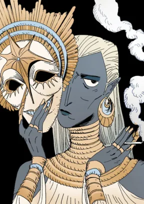

Der AufstiegQS S. 24
Was folgt, ist eine grobe Vorstellung der Feierlichkeiten am Tag des Aufstiegs – doch sofern sich die Spielerfiguren einmischen, wird es wohl kaum reibungslos ablaufen.
Vormittag
Die überaus langsame Parade aus Festwagen und Blaskapellen setzt sich von den Ratskammern oberhalb von Amaranth in Bewegung, zieht den Caliastro-Boulevard hinab, vorbei an Hunderten höflich klatschender Aelfir und ihren rotznäsigen Kindern, überquert die Sicherheitsbrücke am Rand des Distrikts und erreicht den Platz der Tausend Sonnenaufgänge. Schwester Karmesinwolken-der-Sonnenaufgang schließt sich der Parade unter großem Tamtam an ihrer Haustür an; weitere Bischöfe und Würdenträger reihen sich grob nach ihrer Wichtigkeit ein, von den unwichtigsten bis zu den wichtigsten.
Das Ende
Wir wissen nicht, was am Ende eurer Runde geschehen wird. Wie es anfängt, ahnen wir ungefähr, aber danach ist es auch für uns ein Rätsel – die Launen des Glücks, die Entscheidungen der Spielerinnen und Spieler, Fallout und eure Fantasie bedeuten, dass alles offen ist …Wer ist dabei
Schwester Karmesinwolken-der-SonnenaufgangQS S. 22
Aufsteigender Stern der Sonnenkirche, sichere Anwärterin auf das Amt der Erzbischöfin …
Sonnenherrschaft
Subäbtissin Philydia Weisheit-Anmut-die-UnweiseQS S. 21
Eine Drow, die es in der von Aelfir geführten Sonnenkirche ungewöhnlich weit gebracht hat …
Erzbischof Träume-ergießen-sich-nach-außenQS S. 21
Der amtierende Erzbischof, der den Drow wohlgesonnen ist …
Caliastro-Boulevard, AmaranthQS S. 23
Ort → Tab „Orte“ mit vollem Text, Requisiten und Antagonisten
RequisitenSchwarze Garde